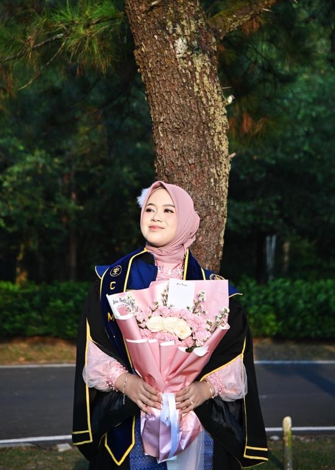

Web & Backend
Merangkai aplikasi utuh, dari tampilan hingga basis data.
- Python
- JavaScript
- Node.js
- PHP
- FastAPI
- REST API
- MySQL
- MongoDB

Kenalan dengan pengembangnya
S.Kom., M.Kom.
IT & Software Engineer · Peneliti Kecerdasan Buatan
Aku percaya teknologi bisa terasa seperti dongeng: lembut, hangat, dan dekat dengan manusia. Di antara baris kode dan model kecerdasan buatan, aku senang merangkai hal-hal kecil yang membuat orang tersenyum, seperti semesta yang kamu lukis dengan tanganmu di Nebula Aurora Sign.
Aku tumbuh bersama rasa ingin tahu tentang bagaimana mesin dapat memahami bahasa, gambar, dan perasaan manusia. Rasa ingin tahu itu membawaku menempuh Sistem Informasi di Universitas Malikussaleh, lalu Magister Ilmu Komputer di IPB University sebagai penerima Beasiswa LPDP.
Di sana aku meneliti Natural Language Processing dan Computer Vision: mengajari model membaca ulasan dan merasakan sentimennya, mengenali bunga lewat citra digital, hingga mendeteksi kematangan buah sawit. Beberapa di antaranya telah terbit di konferensi internasional IEEE.
Kini aku mengembangkan aplikasi sebagai IT & Software Engineer, dari antarmuka hingga server, sambil membangun sendiri sebuah produk penilaian IELTS berbasis AI dari baris kode pertamanya.
Meski begitu, aku tak pernah benar-benar meninggalkan dunia penelitian. Hingga kini aku masih aktif meneliti berbagai hal di bidang kecerdasan buatan dan pengembangan sistem perangkat lunak, serta terus menulis karya ilmiah. Bagiku, meneliti adalah sebuah petualangan: menelusuri pertanyaan, menemukan sesuatu yang baru, lalu belajar lagi dari apa yang ditemukan.
Di luar kode dan jurnal, aku juga menulis cerita. Salah satu novelku telah rampung dan kubukukan secara mandiri, sebuah semesta kecil lain yang lahir dari kata-kata. Mungkin itulah benang merah dari semua yang kulakukan: aku senang mempelajari banyak hal baru, dan selalu ingin membangun karya yang terasa indah, bukan sekadar berfungsi.
PT Usaha Kita Sentosa Grup
Mengembangkan aplikasi perusahaan dari frontend hingga server: platform Karier & Rekrutmen, sistem Purchasing, REST API, Docker, Nginx, serta otomasi AI Agent dengan n8n.
TestLock Asia Group · IELTS Prediction System
Menggagas dan mengembangkan sendiri IELTS Prediction System dari nol: frontend, backend, database, UI/UX, hingga deployment. Di dalamnya, AI menilai jawaban Writing dan Speaking dengan bantuan speech-to-text, lengkap dengan sistem akses berbasis token dan paket tes.
Kunjungi testlock.net ↗IPB University · IPK 3,91 Dengan Pujian · Awardee LPDP
Meneliti analisis sentimen dengan model Transformer IndoBERT & IndoXLNet, pemodelan topik NMF, serta penanganan data tidak seimbang.
Universitas Malikussaleh · IPK 3,81
Membangun sistem informasi tugas akhir mahasiswa, dan menjadi Ketua Bidang Riset & Teknologi HIMASI yang menggagas kegiatan ilmiah tingkat nasional IST.Co.
Merangkai aplikasi utuh, dari tampilan hingga basis data.
Mengajari mesin memahami makna dan rasa dalam kata-kata.
Membuat mesin melihat, membaca tulisan tangan, dan mengenali dunia.
Menjaga agar semuanya tetap menyala dengan tenang.
Reviewer untuk Unisia: Journal of Social Sciences and Humanities (Universitas Islam Indonesia), turut menelaah naskah penelitian sebelum terbit.
Dirancang dan dibangun sendiri dari nol: deteksi 21 titik tangan dengan MediaPipe Hand Landmarker, pengenalan gestur buatan sendiri, dan mesin partikel Canvas untuk galaksi, nebula, dan rasi bintang. Semuanya berjalan di browser, tanpa server dan tanpa database.
“Jika langit adalah halaman, biarlah setiap karya menjadi satu bintang kecil di dalamnya.”
— Wani